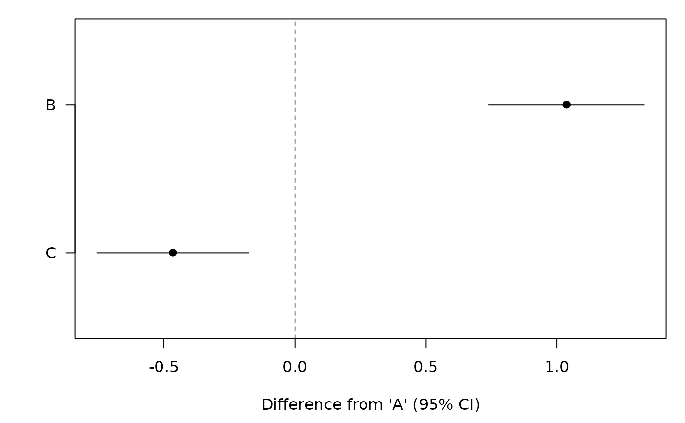
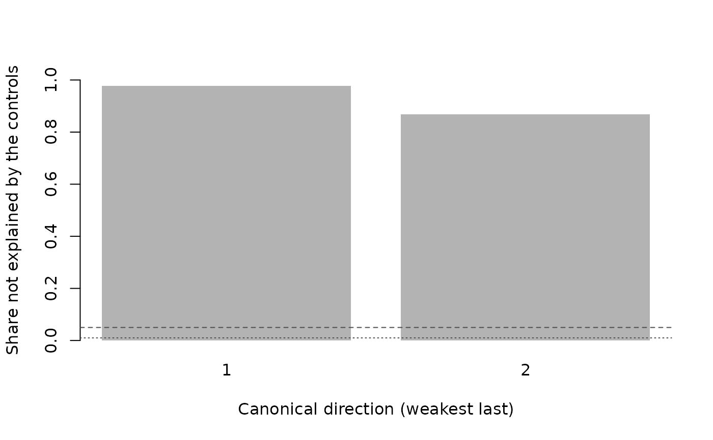

Standard methods for objects returned by soft_lm().
Inference is based on the normal approximation, so summary()
reports z statistics and confint() normal-theory intervals.
Usage
# S3 method for class 'softcats'
coef(object, ...)
# S3 method for class 'softcats'
vcov(object, ...)
# S3 method for class 'softcats'
nobs(object, ...)
# S3 method for class 'softcats'
formula(x, ...)
# S3 method for class 'softcats'
residuals(object, ...)
# S3 method for class 'softcats'
fitted(object, ...)
# S3 method for class 'softcats'
confint(object, parm, level = 0.95, ...)
# S3 method for class 'softcats'
print(x, digits = max(3L, getOption("digits") - 3L), ...)
# S3 method for class 'softcats'
summary(object, ...)
# S3 method for class 'summary.softcats'
print(x, digits = max(3L, getOption("digits") - 3L), ...)
# S3 method for class 'softcats'
tidy(x, conf.int = FALSE, conf.level = 0.95, ...)
# S3 method for class 'softcats'
glance(x, ...)
# S3 method for class 'softcats'
plot(x, which = c("coef", "spectrum"), level = 0.95, ...)Arguments
- object, x
[mandatory] (softcats) A fit returned by
soft_lm(); forprint.summary.softcats(), an object of classsummary.softcats.- ...
[optional] Not used.
- parm
[optional] (character or integer) Coefficients to report, by name or position (default: all coefficients).
- level
[optional] (numeric) Confidence level (default:
0.95).- digits
[optional] (integer) Number of significant digits to print (default:
max(3, getOption("digits") - 3)).- conf.int
[optional] (logical) Whether
tidy()adds confidence limits (default:FALSE).- conf.level
[optional] (numeric) Confidence level for
tidy()(default:0.95).- which
[optional] (character) For
plot():"coef"draws the estimates with confidence intervals,"spectrum"the share of score variation that the controls do not explain, by direction (default:"coef").
Value
coef() a named vector; vcov() a matrix;
confint() a matrix with one row per coefficient; nobs() an
integer; formula() the model formula; residuals() and
fitted() numeric vectors; summary() an object of class
summary.softcats; tidy() and glance() data frames.
The print and plot methods return x invisibly.
Examples
# Example: Standard methods on a fit with three categories
d <- sim_softcats(n = 1500, K = 3, seed = 3)
fit <- soft_lm(y ~ x1 + x2 + x3, probs = ~ prob_A + prob_B + prob_C,
data = d, learner = lrn_lm(degree = 3), seed = 3)
coef(fit)
#> B C
#> 1.0367086 -0.4658388
vcov(fit)
#> B C
#> B 0.02299114 0.01878118
#> C 0.01878118 0.02180805
confint(fit, level = 0.9)
#> 5 % 95 %
#> B 0.7873022 1.2861150
#> C -0.7087433 -0.2229342
tidy(fit, conf.int = TRUE)
#> term estimate std.error statistic p.value conf.low conf.high
#> 1 B 1.0367086 0.1516283 6.837171 8.077241e-12 0.7395226 1.3338946
#> 2 C -0.4658388 0.1476755 -3.154476 1.607867e-03 -0.7552774 -0.1764001
glance(fit)
#> nobs n.categories reference folds n.rep n.clusters min.eigenvalue
#> 1 1500 3 A 5 1 NA 0.0187443
#> min.residual.share condition.number learner
#> 1 0.8689887 11.00786 lm (degree 3)
plot(fit)

plot(fit, which = "spectrum")
